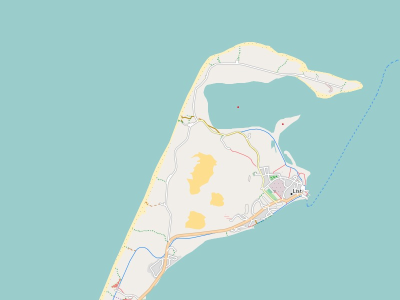
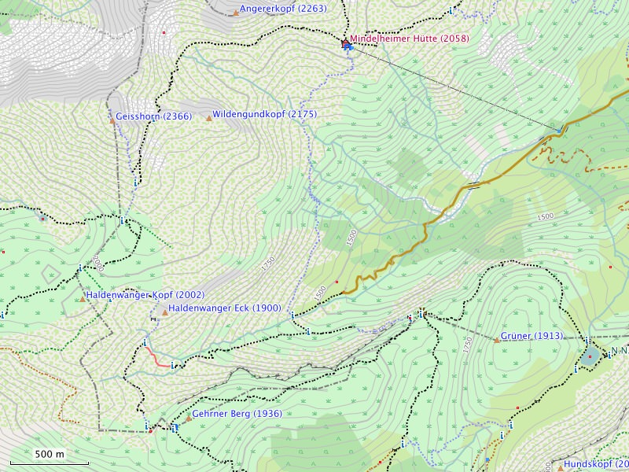

Known Issues
Order of rendering lines:
The order in which lines are rendered can (sadly) not be changed
and is therefore random. This means that with overlapping or
crossing lines it is not possible to define which line is on top
and which line goes below. This may lead to unwanted effects, e.
g. bridges over a river may seem interrupted by a gap. This gap
exists in the rendering because the river line goes on top of
the bridge line. Routing is not effected through this.
Colors and contrast:
The design was created with rather "pale" colors and an
"average" contrast. Road, paths and many important symbols are
displayed more distinctly. The overall design follows the Mapnik
style of OpenStreetMap
Printing using BaseCamp on OS X:
While printing a map using BaseCamp on OS X (Mac) symbols are
turned by 180 degrees and additionally mirrored. With BaseCamp
on windows this does not happen

Map representation in BaseCamp: The northernmost point of Germany - (called elbow) the north end of the island of Sylt to 0m altitude.
Good to see the last dunes Germany - which are shifting the way around 3-7 meters per year to the east.
Planed improvements, user requests
Detail improvements:
- improve display of tideland
- improved distinction of info-plates
User requests:
There are no requests open at this time.

Map representation in BaseCamp: The southernmost point of Germany marked by the state boundary markers No. 147 1883m altitude.
Tips and tricks
Symbols of public transportation:
Especially for passengers of public transportation the symbols
of train stations, bus stops and subway stations are displayed
concisely. It is possible to prevent these symbols from being
displayed. Therefore you have to deactivate the following
display settings:
Hide Map Features -> Transportation -> Ground
Transportation
Hide Map Features -> Transportation -> Transit Service
Symbols for places of worship:
Religious places like churches, mosques and synagogues are
usually significant and well known points for orientation. The
symbols for these places are concise. It is possible to prevent
these symbols from being displayed. Therefore you have to
deactivate the following display settings:
Hide Map Features -> Community -> Place of Worship
Symbols for banks / ATMs:
"Leisure time is expensive" - therefore the symbol for ATMs is
concise. It is possible to prevent these symbols from being
displayed. Therefore you have to deactivate the following
display settings:
Hide Map Features -> Bank/ATM
Visibility of POIs on your GPS device:
Many POIs are only visible on maximum zoom. From the viewpoint
of clarity this is a good feature. But with a GPS device you may
not want to see more POIs in other zooming levels. Many GPS
devices provide settings for customizing the level for which
POIs are being displayed. E. g. on a Dakota-20 you find these
settings here:
Setup -> Map -> Advanced Map Setup -> Zoom Levels ->
Map Points
Elevation lines:
Elevation lines provide important additional information for
mountainous areas, where on plain area these may be bothersome.
It is possible to prevent these lines from being displayed.
Hide Map Features -> Contour -> Topographic
BaseCamp on a Mac with OS X:
If you want to use the Freizeitkarte maps on your Mac you have
to install the App BaseCamp from the App Store (or Garmin).
Additionally the programms MapManager and MapInstall (Garmin)
are required. The actual installation of the Freizeitkarte map
is done by MapManager. All files ending with ".gmap" will be
linked to MapManager - double click on a gmap file and it will
be installed. MapInstall loads a map (or part of it) on your GPS
device or an external data storage such as a micro SD card. If
you want to see every feature of the map it is recommended to
set the "Details" slider to max.
3D maps:
Display of this map as a 3D map is not supported. The
corresponding settings on your GPS device should be set to
"off". If not, this may lead to an unintentional darkening of
the map.
More than one active map on a GPS-device:
On your GPS device there should only be one map active. If not,
this may lead to overlapping at the edges which cases issues
with the display (missing or not matching map elements).
Hiking paths (tip by Günter from Fürth):
If you want hiking paths of the hiking clubs, cycle routes or
public transportation as an overlay in addition to the
Freizeitkarte you can download the respective img file(s) under
this link http://osm.thkukuk.de/.
You also find a description on how to load them on your Garmin
device and activate in the profile of the Freizeitkarte map.
With older Garmin devices that only allow a single img file
named gmapsupp.img you have to merge the Freizeitkarte and the
respective layer using the tool gmaptool, also described under http://osm.thkukuk.de/#installation.
Device and map management:
Advisable in connection with maps and GPS devices are some freeware tools from JaVaWa.
With "JaVaWa Device Manager" you can manage the GPS device. E.g. you can make backups, save owner informations,
or prevent the automatic loading of maps in Basecamp. Quite similar is "JaVaWa GMTK", which lets you
manage your installed maps in Basecamp. Also interesting for Mac users is the utility "CleanEject" which ensures
that all trashed objects are deleted before you eject the SD-card.